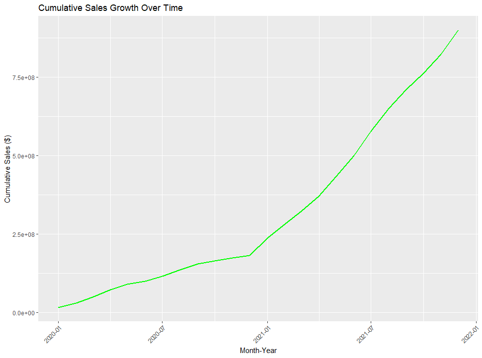
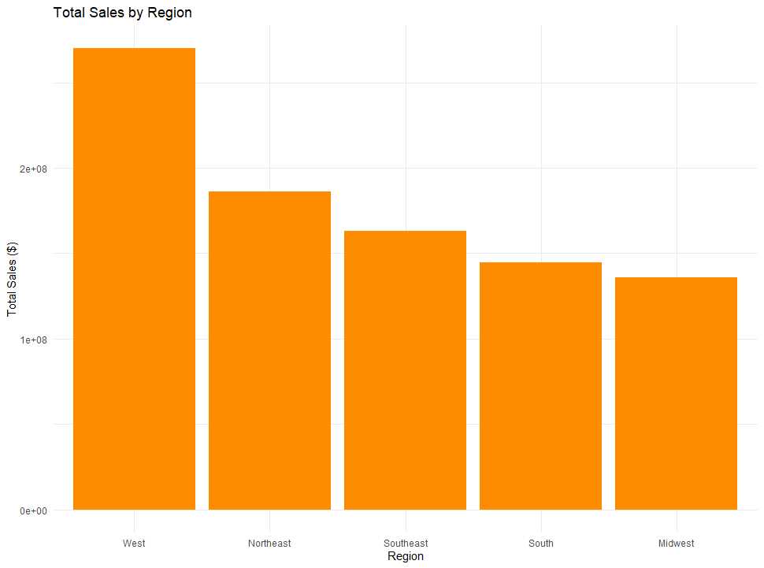
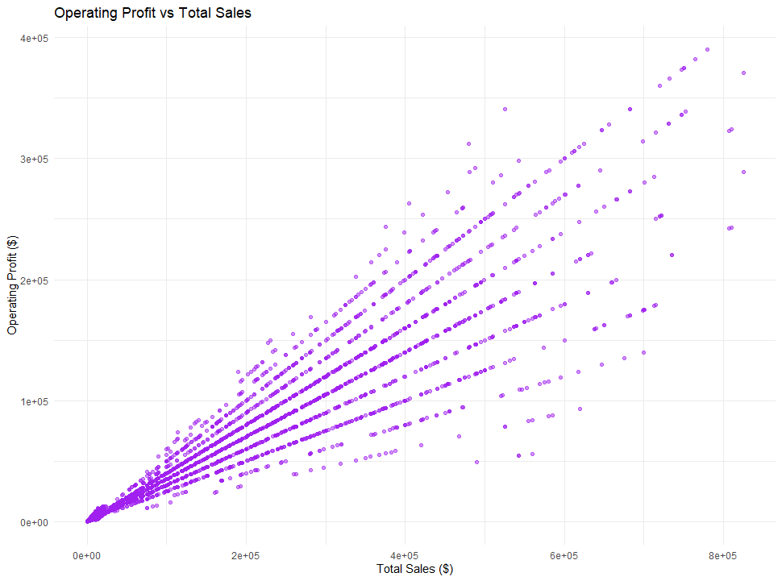

U.S. Sales Insights (2020 - 2021)
📑 Table of Contents
📝 Overview (2020–2021)
This project leverages Power BI for interactive visualizations and dashboards while utilizing R for deeper data exploration, advanced analysis, and pattern recognition. By combining both tools, we deliver comprehensive insights into Adidas' sales performance.
⚙️ Tools & Technologies Used
- ✅ R — For in-depth data exploration, cleaning, and analysis
- ✅ Power BI — For interactive data visualization and reporting
- ✅ Libraries in R: ggplot2, dplyr, lubridate, readxl, stringr
- ✅ Web Display: HTML, CSS, JavaScript
📂 Data Source
File Name: Adidas US Sales Datasets.xlsx
Rows: 9,648
Columns: 13
Key Columns:
- Invoice Date – Sales transaction date
- Region/State/City – Geographical data
- Product – Product categories
- Price per Unit – Pricing details
- Units Sold – Quantity sold
- Total Sales – Revenue generated
- Operating Profit – Profit after operational costs
- Sales Method – In-store vs online sales
🔍 Data Exploration in R
Step 1: Data Structure & Missing Values
The data is inspected using the first five rows, and missing values are checked to ensure clean data for analysis.


Step 2: Data Summary
A summary of key statistical metrics was calculated, providing insights into the sales, profit margins, and quantities for various products.

📈 Visual Analysis in R
Total Sales Over Time
Sales by Product Category
Operating Profit vs Total Sales
📊 Power BI Dashboard Design
The visuals in Power BI are constructed to allow for an interactive exploration of the sales data, combining the insights from R with intuitive dashboards.
Visual Layout
- Page 1 - Sales Overview
- Page 2 - Product Analysis
- Page 3 - Sales Method & Growth
- Page 4 - Deep Dive Analysis

Power BI Dashboard Video Demo
📈 Key Business Recommendations
- Focus on Q4 Marketing: Capitalize on seasonal sales spikes during the holiday season.
- Expand High-margin Products: Prioritize high-performing categories like Men’s Athletic Footwear.
- Improve Online Sales: Strategize to boost underperforming online sales channels.
- Optimize Pricing Strategy: Evaluate pricing for high-revenue, low-margin products to enhance profitability.
- Increase Regional Inventory: Focus on the Northeast region, which has the highest demand.